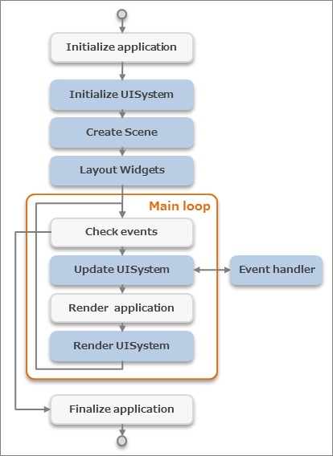
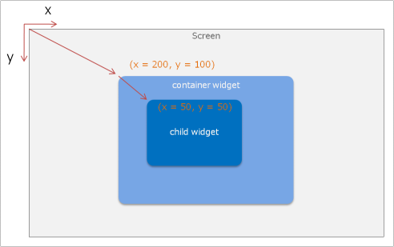
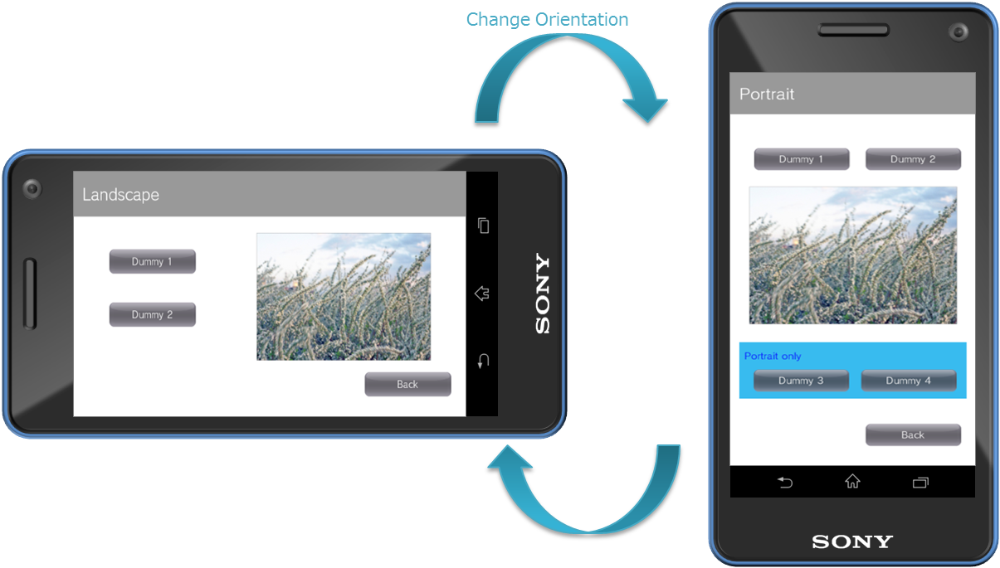
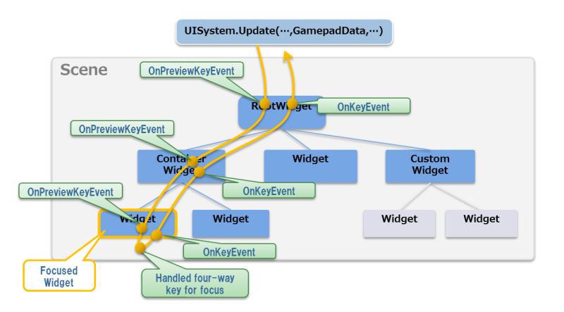

This chapter describes the basic concepts of the UI Toolkit.
For details on how to create a UI Toolkit project, refer to UI Toolkit Programming Guide - Quick Start.
Contents
The types of major objects in an application using the UI Toolkit and their relationships are shown in Figure 1 and Table 1.

Figure 1 Main Objects of an Application Using the UI Toolkit
Table 1 List of Main Objects Object Description UISystem Object that manages the entire system of the UI Toolkit Scene Object representing the screen Widget Parts (buttons and labels) comprising the user interface Container widget Widgets (panels and dialogs) that can store separate widgets inside UISystem is an object that manages the entire system of the UI Toolkit. Use it to initialize the UI Toolkit, update and render frames, and create screen transitions. UISystem is a static class, and multiple UI Toolkit systems cannot be used on one application.
A scene represents the screen; it is displayed when set to the UISystem. Multiple scenes can be created with one application, and the screen can be transitioned by switching the scene set to the UISystem. Normally, only one scene can be displayed at a time.
Multiple widgets can be positioned in a scene. A container widget is a type of widget that can contain separate widgets inside. A container widget can be used to construct a tree structure for widgets. The layout of widgets within a scene can be done visually by using the UI Composer.
This describes the flow from where the application using the UI Toolkit starts to where it ends (Figure 2).
Figure 2 Life-cycle of an Application Using the UI Toolkit
The blue blocks are UI Toolkit processes and the white blocks are other processes, such as logic and games.
First, the application and the UISystem are initialized. Next, a scene is created and the layout of widgets is performed for that scene. Then, the main loop is entered and each frame is updated and rendered. An event is issued from a widget at the time of update, and each event handler is executed. Finally, when the application ends, the main loop is exited, and the application terminates.
By performing rendering on the application side before rendering of the UISystem, games and UI can be rendered over each other.
The following scene graph is configured in the UI Toolkit (Figure 3).

Figure 3 Scene Graph of UI Toolkit
Scene
This represents the screen. Although multiple scenes can be created for a single application, normally, only one scene can be displayed at a time.
Widget
This is a part (widget) that comprises the user interface. This includes buttons and labels. Widgets can form a tree structure, and one tree is positioned in one scene. Also, multiple widgets can be treated collectively as a single widget. For details on standard widgets, refer to the UI Toolkit Programming Guide - Widgets.
RootWidget
This is a special widget that is the root of a widget tree. Only one exists per scene. The RootWidget object is created automatically when a scene is created, and it is not created by the user. To display this on the screen, the widgets to be displayed must be placed below the root widget.
UIElement
This is a rendering element. UIElements can also form a tree structure. Widgets are composed of a tree of UIElements.
RootUIElement
This is a UIElement that is the root of the UIElement tree. Only one is displayed per widget.
Scene Graph Rendering Order
Rendering is performed from the root widget in order of depth. Terminal widgets are displayed at the very front. Widgets are rendered in order starting from the UIElement of the UIElement root.
Rendering of the earlier scene graph example is performed in the order indicated in the diagram (Figure 4).

Figure 4 Rendering Order
In the coordinate system for positioning widgets, the top left is the starting point.
Also, when a widget forms a tree, the coordinates of the child widget are the relative coordinates from the parent widget (Figure 5).
Figure 5 Coordinate System of a Widget
Widgets can also be positioned in 3D. For details, refer to UI Toolkit Programming Guide - Rendering System of the UI Toolkit.
A container widget in a scene or panel has a functionality for dynamically adjusting the margins and size of the widget positioned inside (layout anchor functionality).
For example, when a panel used for the background has fixed margins and the size is set to change automatically, the layout does not have to be specified for different devices (Figure 6).

Figure 6 Example of Positioning a Panel with Fixed Margins to Different Size Scenes
The layout anchor can be specified with the Anchors property of a widget.
Specify whether to fix the size of the top, bottom, left, right, width, and height in the code, as shown below.
widget.Anchos = Anchors.Top | Anchors.Left | Anchors.Width | Anchors.Height;Typical patterns are shown below (Figure 7).

Figure 7 Anchors Setting Examples
This section explains the methods for specifying the pixel density and scaling the screen size.
Even if the position and size of the widget is changed to match the display size by also using the layout anchor function, on a display with a different resolution but same inch size, the appearance of the font size and 9-patch image changes (Figure 8).

Figure 8 Example of Displays with Different Resolutions
Specify the pixel density to enable scaling of the virtual display size on the UI Toolkit.
For example, when the pixel density is set to 1.5 for a display size of 1280x720 pixels, the display is handled with a virtual size of 853x480 pixels on the UI Toolkit.
The position and size of the widget and the font size, etc., have the same values as that when positioned with a 853x480 pixel display, and are 50% larger when finally rendered on the display.
Specify the pixel density when initializing the UI Toolkit. Calculate and specify the pixel density while referring to the following code.
// AppMain.cs public static void Initialize () { // Set up the graphics system graphics = new GraphicsContext (); // Get pixel-density float pixelDensity = getPixelDensity(graphics); // Initialize UI Toolkit with pixelDensity UISystem.Initialize (graphics, pixelDensity); } // get pixel-density from actual screen size and DPI static float getPixelDensity(GraphicsContext graphics) { float pixelDensity; float w = graphics.Screen.Width / SystemParameters.DisplayDpiX; float h = graphics.Screen.Height / SystemParameters.DisplayDpiY; float inchDiagSq = w * w + h * h; if (inchDiagSq < 6 * 6) { // normal size display ( < 6 inch) if (SystemParameters.DisplayDpiX < 300) { // normal resolution pixelDensity = 1.0f; } else { // high resolution pixelDensity = 1.5f; } } else { // large size display ( > 6 inch) if (SystemParameters.DisplayDpiX < 200) { // normal resolution pixelDensity = 1.0f; } else { // high resolution pixelDensity = 1.5f; } } return pixelDensity; }Note that the pixel density value must be considered when directly handling the Font class and Texture2D class on the UI Toolkit.
The following is an explanation on how to change the screen orientation.
As shown in Figure 9, the screen can be displayed in accordance to the direction at which the device is held.
Figure 9 Screen Orientation According to Device Direction
By setting the ScreenOrientation property of the Scene class, the direction by which to display can be changed per screen.
In the following code example, after setting the ScreenOrientation property, the method output by the UI Composer is used to perform a re-layout and UISystem.SetScene is called.
// Set ScreenOrientation property TargetScene.ScreenOrientation = ScreenOrientation.Portrait; // Relayout (UI Composer output method) TargetScene.SetWidgetLayout(LayoutOrientation.Vertical); // Set this scene UISystem.SetScene(TargetScene);The display results for each value setting of ScreenOrientation are as follows (Figure 10).

Figure 10 Screen Orientation Display Example
When ScreenOrientation is specified, the coordinate system, touch panel coordinates, directional key orientation, and the orientation of the motion sensors will also be changed at the same time.
Values of the UISystem.FramebufferWidth and FramebufferHeight properties are not dependent on ScreenOrientation; values of the Landscape state will always be returned.
Moreover, Transition also runs based on Landscape. For example, when executing Left of PushTransition from the Portrait scene to the ReversePortrait scene, each scene will be displayed with Portrait and ReservePortrait; however, the transition animation will move in the left direction in the Landscape state.
Limitations
- ScreenOrientation of the currently displayed scene cannot be changed. After setting the Scene.ScreenOrientation property in advance, carry out UISystem.SetScene.
- All renderings not using UI Toolkit (text input dialog, onscreen controller, etc.) will not rotate.
- The simulator window will not rotate. The internal screen will rotate.
Effect is a feature that realizes animation. This Effect treats the animation as a part, enabling simple animation of widgets.
For information on Effect provided as standard, refer to UI Toolkit Programming Guide - Effects and Transitions. Furthermore, by deriving the Effect class, it is possible to create custom animations.
In addition to Effect, there is Transitions that provides animations during screen transitions. By specifying a Transition when setting a new scene to UISystem, it is possible to apply an animation to a screen transition. For information on the standard Transition, refer to UI Toolkit Programming Guide - Effects and Transitions.
An ImageAsset object is used when handling an image in the UI Toolkit.
An ImageAsset object has the following features.
- Image file cache
- Asynchronous reading of image files
- Reading of images embedded in the system
- Creation and release of Texture2D objects
The setting of an image (texture) to a widget is performed entirely using an ImageAsset object. An ImageAsset object is also used when setting to UIElement, which is a render element within a widget.
An ImageAsset object can be created from the path of the image file, Image object, and the Texture 2D object.
// Create from the image filepath. ImageAsset imageAsset1 = new ImageAsset("/Application/assets/photo01.png"); // Create from Image object. Image image = new Image("/Application/assets/photo02.png"); ImageAsset imageAsset2 = new ImageAsset(image); image.Dispose(); // Create from Texture2D object. Texture2D texture2d = new Texture2D("/Application/assets/photo03.png", false) ImageAsset imageAsset3 = new ImageAsset(texture2d); texture2d.Dispose();For the file path, specify "/Application/(the relative path from the project file)".
SampleApp/ SampleApp.csproj AppMain.cs app.cfg MyClass.cs assets/ photo01.png : Asset fileFor projects with the above file configuration, the path of the asset file is as follows.
"/Application/assets/photo01.png"
To display a modal dialog window, use a Dialog widget.
The Dialog widget and the widgets of that derivative class differ from other widgets in that they can be displayed on screen without being registered to a scene.
Dialog dialog = new Dialog(); dialog.Show();
This section describes the touch event distribution flow of the UI Toolkit.

Figure 11 Touch Event Distribution Flow of the UI Toolkit
The orange arrows in Figure 11 represent the flow of the data for a one-finger touch, and the process is as shown below.
- When a touch operation occurs, it is determined whether a hit occurs for the widgets on the screen.
- An event is then distributed to the GestureDetector registered to the hit widget.
- If a gesture is recognized, a gesture event is issued and distributed to the event handler registered to the GestureDetector.
- After the determination via GestureDetector, touch event is distributed to the TouchEventReceived event handler.
A hit determination is performed for each finger, and if the same widget is touched with multiple fingers, the touch data is collectively distributed. A hit determination is performed only when a touchdown occurs, and a touch event to the same widget is distributed until the finger is removed from the touch panel or the operation is canceled. Touch data will continue to be distributed to the widget - even when the finger drags the widget or when the finger moves away from the widget area - until the finger is actually removed from the touch panel.
Touch data of multiple fingers is collectively distributed to TouchEventCollection. The touch data of the finger that first touched the widget is stored in TouchEventCollection.PrimaryTouchEvent - use this when you only want to process touch data for one finger.
Normally, when an event is distributed to a child widget, the touch data is not distributed to the parent widget. Touch data is distributed only to the touched widget. However, the touch event of the child widget can be hooked. Hooking can be enabled/disabled using Widget.HookChildTouchEvent; when it is enabled, the touch event of the parent widget will be processed before the touch data is distributed to the child widget. By changing the Forward flag of the distributed TouchEventCollection, it is possible to control distribution to the child widget.
The gesture event carried out on the widget can be processed by registering the widget to the GestureDetector. Multiple GestureDetector can be registered to one widget; however, the same GestureDetector cannot be registered to multiple widgets.
public class SampleScene : Scene { ImageBox imageBox; public SampleScene () { imageBox = new ImageBox(); DragGestureDetector drag = new DragGestureDetector(); drag.DragDetected += DragEventHandler; imageBox.AddGestureDetector(drag); FlickGestureDetector flick = new FlickGestureDetector(); flick.FlickDetected += FlickEventHandler; imageBox.AddGestureDetector(flick); this.RootWidget.AddChildLast(imageBox); } private void DragEventHandler(object sender, DragEventArgs e) { DoSomething(e); } private void FlickEventHandler(object sender, FlickEventArgs e) { DoSomething(e); } }Register the TouchEventReceived event handler to a widget to process the touch event distributed to the widget.
public class SampleScene : Scene { ImageBox imageBox; public SampleScene () { imageBox = new ImageBox(); imageBox.TouchEventReceived += new EventHandler<TouchEventArgs>(ImageBoxTouchEventReceived); this.RootWidget.AddChildLast(imageBox); } private void ImageBoxTouchEventReceived (object sender, TouchEventArgs eventArgs) { TouchEventCollection touchEvents = eventArgs.TouchEvents; // With single finger { TouchEvent e = touchEvents.PrimaryTouchEvent; DoSomething(e); } // With multi-fingers { foreach (TouchEvent e in touchEvents) { DoSomething(e); } } touchEvents.Forward = true; } }When creating a custom widget, the touch event can be processed by overriding Widget.OnTouchEvent().
public class SampleWidget : Widget { protected internal override void OnTouchEvent(TouchEventCollection touchEvents) { base.OnTouchEvent(touchEvents); // With single finger { TouchEvent e = touchEvents.PrimaryTouchEvent; DoSomething(e); } // With multi-fingers { foreach (TouchEvent e in touchEvents) { DoSomething(e); } } touchEvents.Forward = true; } }When using a touch event, call the UISystem.Update method (with arguments attached including List<TouchData>) in Main Loop.
This section describes the methods for and points to consider when operating the UI with the game pad.
To enable operation using the game pad keys with the UI Toolkit, include GamePadData in the argument when calling the UISystem.Update method. Including GamePadData enables focus operation using the directional buttons and operation using the Enter and Back buttons (Cross or Circle buttons).
// in main loop public static void Update () { GamePadData gamePadData = GamePad.GetData (0); List<TouchData> touchDataList = Touch.GetData (0); // Update UI Toolkit UISystem.Update(touchDataList, gamePadData); }Pressing any game pad button with focus not active (focus is not displayed) makes focus active (focus is displayed), and operations can be performed using the game pad. Touching the screen while the focus is active or allowing a certain time to elapse changes the focus to not active.
Operation with directional buttons
Operating the directional buttons while the focus is active normally moves the focus. Operating the directional buttons may not move the focus for the widgets shown in Table 2, so be careful for the layout of these widgets.
Table 2 Widgets Whose Layout must be Considered Widgets
Operation with directional buttons
Layout precautions
Slider (horizontal display)
Left-right keys change the value.
Do not position a widget with focus to the left or right of Slider.
Slider (vertical display)
Up-down keys change the value.
Do not position a widget with focus above or below Slider.
DatePicker / TimePicker
Up-down keys change the value, and left-right keys move the focus to the row and left-right widget.
Do not position a widget with focus above or below DatePicker and TimePicker.
ListPanel / GridListPanel (vertical display)
Up-down keys move the focus of the item and scrolls at the top or bottom end. When the focus is on the item at the bottom or top end, the focus moves to the widget at the top or bottom.
When there are many items, do not position a widget with focus above or below ListPanel and GridListPanel.
GridListPanel (horizontal display)
Left-right keys move the focus of the item and scrolls at the left or right end. When the focus is on the item at the far right or left end, the focus moves to the widget at the left or right.
When there are many items, do not position a widget with focus to the left or right of GridListPanel.
ScrollPanel
If the focus of the widget positioned inside with the directional buttons can be moved, the focus moves; otherwise, it scrolls. If scrolling reaches the end, the focus moves to the widget at the top, bottom, left, or right.
When there is a large scrolling area, do not position a widget with focus in the direction of scrolling of ScrollPanel.
PagePanel
The focus of the widget positioned inside with the directional buttons moves, and the page switches at the right or left end. On the first or last page, the focus moves to the left or right widget on the page panel.
Do not position a widget with focus to the left or right of PagePanel.

Figure 12 Example of Slider Layout
Operations using Enter and Back buttons
For widgets that can be operated with Button, PopupList, or other tap operation, an operation equivalent to tapping can be performed when the Enter (Cross or Circle) button is pressed and the widget is in focus.
Pressing the Back button (Cross or Circle) when a dialog is displayed closes that dialog.
Pressing the Back button when the navigation scene is displayed returns to the previous scene.
To customize the focus and key operations, refer to UI Toolkit Programming Guide - Key Events and Focus.
This section describes the key event distribution flow of the UI Toolkit.
The key event types are the four key events in Figure 13 and EachFrameRepeat.

Figure 13 Key Event Types and Timing
Key events are different from the GamePadButton class in that events are distributed for each button.
The distribution flow of key events varies depending on whether the focus is active.
When the focus is active
The preview key event is distributed from the RootWidget of the current scene to the widget currently in focus following the widget tree. Thereafter, the event of the directional buttons is processed so as to be in focus, and now the normal key event is distributed from the widget in focus toward RootWidget (Figure 14).
Figure 14 Key Event Distribution Flow
To handle a preview key event and normal key event, override the OnPreviewKeyEvent and OnKeyEvent methods of the widget or register the event handler to the PreviewKeyEventReceived and KeyEventReceived events.
{ // add event handler anyWidget.KeyEventReceived += new EventHandler<KeyEventArgs>(KeyEventReceivedHandler); } void KeyEventReceivedHandler(object sender, KeyEventArgs e) { switch (e.KeyEventType) { case KeyEventType.Up: if (e.KeyType == KeyType.Triangle) { DoSomething(); e.Handled = true; } break; case KeyEventType.Down: case KeyEventType.LongPress: case KeyEventType.Repeat: default: break; } }When the Handled property of the event argument is set to true for each event handler, distribution of trees thereafter is not performed (Figure 15). However, the Handled property does not effect different keys or key event types and key events of different frames.

Figure 15 Canceling Distribution by Handling of Key Event
When the focus is not active
If a preview key event was distributed to RootWidget of the current scene and this event was not handled, the event is handled for focus and the focus becomes active.
For detailed key event handling, refer to UI Toolkit Programming Guide - Key Events and Focus.
The motion event distribution flow of the UI Toolkit is explained here.
When the value of an acceleration sensor embedded on a device (for example) changes, of all the widgets registered to a scene, the motion event will be sent to all widgets overriding Widget.OnMotionEvent or to all widgets with an event handler registered to Widget.MotionEventReceived.
Register the MotionEventReceived event handler to a widget to process the motion event distributed to the widget.
public class SampleScene : Scene { ImageBox imageBox; public SampleScene () { imageBox = new ImageBox(); imageBox.MotionEventReceived += new EventHandler<MotionEventArgs>(ImageBoxMotionEventReceived); this.RootWidget.AddChildLast(imageBox); } private void ImageBoxMotionEventReceived (object sender, MotionEventArgs eventArgs) { DoSomething(eventArgs): } }When creating a custom widget, the motion event can be processed by overriding Widget.OnMotionEvent().
public class SampleWidget : Widget { protected internal override void OnMotionEvent(MotionEvent motionEvent) { base.OnMotionEvent(motionEvent); DoSomething(motionEvent); } }When using a motion event, call the UISystem.Update method (with arguments attached including MotionData) in Main Loop.
All classes in the UI Toolkit (excluding the AnimationUtility class) are not thread-safe.
To operate members of the UISystem and widgets, do so from the main thread. It is possible to monitor and process sub-threads per frame by using the OnUpdate method of a scene. Note that processing for the Sce.PlayStation.Core.Graphics namespace should also be carried out from the main thread.
class MyScene : Scene { Label label; object SysncObject; string AsyscText; protected internal override void OnUpdate(float elapsedTime) { base.OnUpdate(elapsedTime); lock (SyncObject) { if (AsyncText != label.Text) { label.Text = AsyncText; } } } // Initialize and Multithread processing ..... }